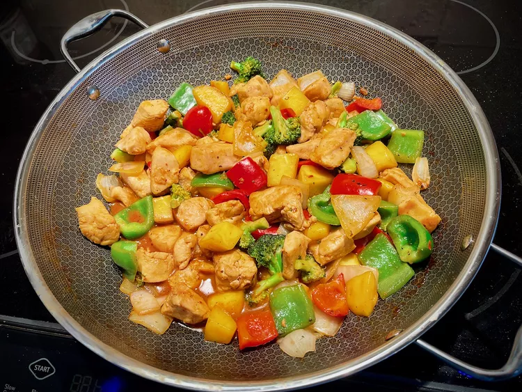

Mango Chicken Stir-Fry

Description
This colorful mango chicken stir-fry with broccoli and bell peppers comes together quickly, once the prep is done. Serve with rice, cauliflower rice, or in a bowl on its own.
Ingredients
- ½ cup orange juice
- 2 tablespoons tomato paste
- ¼ cup coconut aminos (soy-free seasoning sauce)
- 1 tablespoon chile-garlic sauce (such as Sriracha®), or to taste
- 1 teaspoon ground ginger
- 1 teaspoon granulated garlic
- 2 teaspoons arrowroot powder
Steps
- Combine orange juice, tomato paste, coconut aminos, chile-garlic sauce, rice vinegar, ginger, garlic, and 2 teaspoons arrowroot powder in a pint container with a well-fitting lid. Cover and shake until sauce is well combined; set aside.
- Cut chicken breasts into bite-size pieces and place in a large resealable plastic bag. Add salt, white pepper, and 1 tablespoon arrowroot to the bag; seal bag and gently squeeze contents until chicken is well-coated.
- Heat 1 tablespoon avocado oil in a large non-stick skillet or wok over medium-high heat until hot.
- Add chicken pieces in a single layer and cook for about 1 minute. Using tongs, turn chicken and begin to stir. Move chicken quickly around in the skillet and turn so all sides will come in contact with the skillet and begin to brown, about 5 minutes.
- Continue stir-frying until chicken is no longer pink in the center and the juices run clear, about 5 more minutes. An instant-read thermometer inserted into the center should read 162 to 165 degrees F (72 to 74 degrees C). Remove chicken pieces to a plate and keep warm